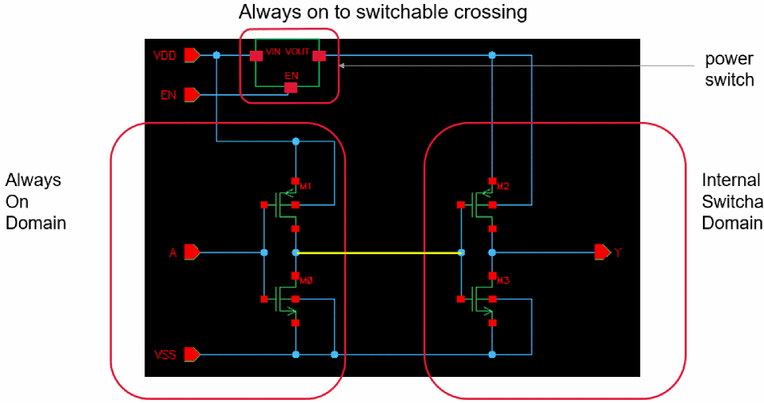
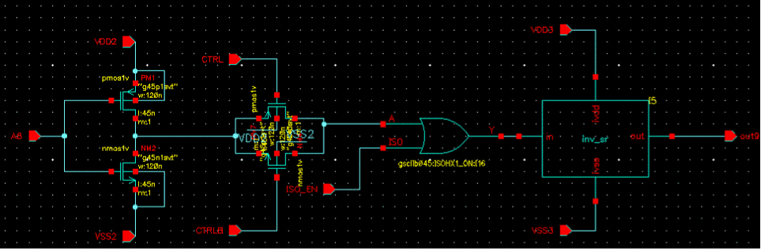

Isolation Checks
The following checks are performed for various types of isolation or level shifters in a design.
-
Missing isolation check
Reports all domain crossing involving at least one switchable domain and another switchable or always on domain without isolation. The driver supply could be MOS drain terminals, standard cell output, or output macro domain ports. Similarly, load could be MOS gate terminals, standard cell input, or macro domain ports.
In addition, reports violations for the following scenarios when a receiver supply can be floating if the driving isolation or level shifter cell supply is off.- A level shifter output is considered floating if the level shifter output supply is off.
- A non-enabled isolation cell output is considered floating when the isolation supply is off.
- A NAND isolation output can be considered valid if ground supply is off and enable driver supply is on and the output pin is not specified as non-floating.
- A NOR isolation output can be considered valid if power is off and enable driver supply is on and the output pin is not specified as non-floating.
- Any other enabled isolation cell output is always considered floating when the isolation supply is off.
The check reports violations for the following scenarios where level shifter and isolation cell data pins can be floating if the driver output supply is floating.- A non-enabled level shifter input data pin that cannot accept a floating input.
- An enabled level shifter data pin that can receive a floating input if the supply for the enable driver is on and the level shifter data pin is not specified as non-floating. A non-enabled isolation cell data pin that cannot accept a floating input if the cell is single rail.
- A non-enabled isolation cell data pin that receives a floating input if the cell is dual rail and if the backup supply is on and the isolation cell data pin is not specified as non-floating.
- An enabled isolation cell data pin that can receive a floating input if the supply for the enable driver is on and the isolation cell data pin is not specified as non-floating.
-
Incompatible isolation check
Reports violation for an enabled isolation or level shifter cell if the related supply for cell's enable pin is on but the supply for the enable pin's driver if off. -
Redundant isolation check
Reports an error if the driver and receiver of an isolation cell are switched on and off simultaneously or they are never turned off. This helps in optimizing the design area and power by indicating the redundant circuit elements.

Related Topics
Defining the Severity of Design Checks
Checking a Design in Foreground Mode
Checking a Design in Background Mode
Loading the Violations Database
Return to top